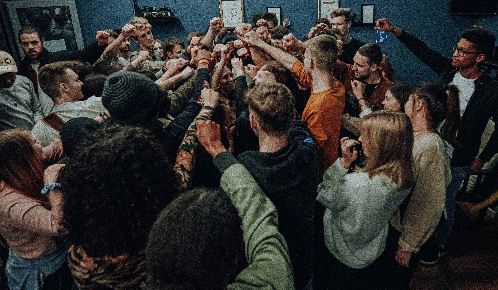

Pertenencia a Bandas en Adolescentes: Factores de Riesgo y Proteccion.
La adolescencia es una etapa de profunda transformacion en la que la busqueda de identidad, pertenencia y reconocimiento social ocupa un lugar central en la vida de los jovenes. En este contexto, la vinculacion a grupos de iguales es completamente natural y necesaria para el desarrollo. Sin embargo, cuando ese deseo de pertenencia no encuentra cauces saludables, algunos adolescentes pueden verse atraidos hacia bandas u otros grupos con dinamicas de riesgo.
Comprender por que ocurre esto, y que puede hacer el entorno para prevenirlo, es fundamental. En Seliana Psicologia queremos ofrecer una mirada rigurosa y accesible a este fenomeno, centrandonos en los factores psicologicos que inciden en el riesgo y en la proteccion, con especial atencion al papel irremplazable de la familia.
¿Por que un adolescente se une a una banda?
Entrar a formar parte de una banda rara vez es una decision fria y calculada. Suele ser la respuesta a una necesidad emocional no satisfecha. Para comprender el fenomeno, es util conocer las motivaciones psicologicas mas frecuentes que subyacen a esta decisión:
- Necesidad de pertenencia: Durante la adolescencia, el grupo de iguales adquiere una importancia enorme. Pertenecer a algo, sentirse parte de una comunidad y ser aceptado son necesidades basicas a esta edad. Cuando el adolescente no encuentra ese espacio en la familia, la escuela o el deporte, puede buscarlo en cualquier grupo que se lo ofrezca.
- Busqueda de identidad: Saber quienes somos es una tarea central de la adolescencia. Las bandas ofrecen una identidad clara, con simbolos, normas y una narrativa compartida que da sentido a quien se une a ellas. Para un joven con una identidad fragil o difusa, esto puede resultar muy atractivo.
- Proteccion y seguridad percibida: En entornos donde el adolescente se siente vulnerable, ya sea por acoso, por vivir en un barrio conflictivo o por una baja autoestima, la banda puede percibirse como un escudo. La logica es simple: si formo parte de un grupo fuerte, nadie me hara dano.
- Busqueda de reconocimiento: La necesidad de ser valorado y visto es universal. Algunos jovenes que no encuentran reconocimiento en los ambitos convencionales, el academico o el familiar, pueden encontrarlo en la banda a traves del estatus, el respeto impuesto o la admiracion de otros miembros.
- Ausencia de alternativas de ocio y proyecto de vida: Cuando un adolescente no tiene expectativas de futuro claras, no se siente capaz de alcanzarlas o su entorno no le ofrece actividades significativas, el tiempo libre no estructurado puede convertirse en una puerta de entrada a grupos de riesgo.

Factores de Riesgo Psicológicos
La investigación psicologica ha identificado una serie de factores individuales que aumentan la vulnerabilidad de un adolescente ante la influencia de bandas. Conocerlos no implica estigmatizar al joven, sino entender el contexto para poder intervenir a tiempo.
- Baja autoestima y autoconcepto negativo: Los adolescentes que no se sienten valiosos o competentes son mas susceptibles a buscar validacion externa en grupos que les ofrezcan un rol definido, aunque este sea socialmente cuestionable.
- Dificultades en la regulacion emocional: La incapacidad para gestionar emociones intensas como la frustracion, la rabia o el miedo puede llevar al adolescente a buscar entornos donde estas emociones encuentren una salida, muchas veces a traves de la violencia o la transgresion.
- Impulsividad y busqueda de sensaciones: Ciertos perfiles con mayor tendencia a la impulsividad o a la busqueda de experiencias intensas pueden ser mas atraidos por el componente de riesgo y adrenalina que algunas bandas ofrecen.
- Historial de trauma o victimización: Haber sufrido maltrato, negligencia, acoso escolar u otras formas de violencia aumenta significativamente el riesgo. El trauma no resuelto puede hacer que el adolescente normalice entornos violentos o busque en la banda la proteccion que no encontro en su hogar.
- Problemas de conducta previos: Las dificultades conductuales en la infancia, especialmente cuando no han sido atendidas adecuadamente, constituyen un predictor relevante de vinculacion a grupos antisociales en la adolescencia.
- Bajo rendimiento academico y desvinculación escolar: La escuela es un espacio clave de socialización y construcción de futuro. Cuando un adolescente se siente fracasado o excluido en ese ámbito, puede buscar en otro lugar el sentido de logro y comunidad que no encuentra en las aulas.
Factores de Protección Psicológicos
De la misma manera que existen factores que aumentan el riesgo, la psicologia ha identificado recursos internos que actuan como escudos frente a la influencia de bandas. Fomentar estos factores en los adolescentes es una de las estrategias preventivas mas eficaces.
- Autoestima solida y sentido de autoeficacia: Un adolescente que se conoce, se valora y confía en su capacidad de lograr metas tiene menos necesidad de buscar validacion en grupos de riesgo.
- Competencias emocionales y sociales: Saber nombrar y gestionar las propias emociones, resolver conflictos de forma no violenta y establecer relaciones sanas son habilidades que reducen significativamente la vulnerabilidad.
- Proyecto de vida y metas personales: Tener algo por lo que luchar, ya sean estudios, una afición, un sueño profesional, actua como un ancla que orienta las decisiones del adolescente hacia el futuro.
- Vinculación positiva con la escuela: Sentirse parte de la comunidad escolar, tener una relacion de confianza con algun profesor o encontrar un ambito de exito dentro del centro educativo son factores protectores de enorme peso.
- Red de amistades prosociales: El grupo de iguales puede ser un factor de riesgo, pero tambien uno de protección. Amigos con valores saludables, actividades constructivas y relaciones de apoyo genuino reducen considerablemente la probabilidad de vinculación a bandas.
La Familia: El Factor Protector mas Poderoso
Si hay un elemento que la investigacion psicologica senala de forma consistente como el principal factor de protección frente a la pertenencia a bandas, ese es la familia. No la familia perfecta ni la familia sin conflictos, sino aquella que es capaz de ofrecer lo que todo adolescente necesita: un entorno seguro donde sentirse visto, escuchado y amado incondicionalmente.
La funcion de la familia no es controlar al adolescente, sino acompañarlo. Y ese acompañamiento tiene un ingrediente esencial: la comunicación libre y abierta.
Comunicación Abierta: La Clave de un Hogar Seguro
Un adolescente que puede hablar con sus padres o cuidadores sin miedo al juicio o al castigo tiene mucho menos que buscar fuera. La comunicación abierta en el seno familiar no surge de forma espontánea; se construye, se cuida y se practica dia a dia. Algunas claves para fomentarla:
- Escucha activa y sin juicios: Cuando el adolescente habla, la respuesta del adulto marca si seguirá haciéndolo en el futuro. Interrumpir, minimizar o reaccionar con enfado enseña a callar. Escuchar con genuino interés enseña a compartir.
- Presencia real, no solo física: Estar en casa no es lo mismo que estar disponible. Los adolescentes necesitan adultos que estén presentes emocionalmente, capaces de dejar lo que estan haciendo cuando el joven necesita hablar.
- Validar las emociones, no solo gestionar conductas: Antes de corregir un comportamiento, es fundamental entender la emoción que hay detras. Un adolescente que se siente comprendido es mucho mas receptivo a los límites y a la guía del adulto.
- Crear espacios habituales de diálogo: Las conversaciones importantes rara vez ocurren cuando se fuerzan. Ocurren durante una cena tranquila, en el camino al colegio o antes de dormir. Crear rutinas de tiempo compartido facilita que el dialogo fluya de manera natural.
- Hablar sin tabues: Si el adolescente percibe que hay temas prohibidos en casa, los buscara en otro lugar. Abordar con naturalidad temas como las amistades, los conflictos, las presiones del grupo o incluso los riesgos asociados a ciertas conductas refuerza la confianza mutua.
- Mostrar interés genuino por su mundo: Conocer a sus amigos, interesarse por su musica, sus videojuegos o sus preocupaciones no significa aprobarlo todo, sino tender puentes de conexion que el adolescente percibirá como respeto.
Cuando Pedir Ayuda Profesional
A veces, a pesar del esfuerzo familiar, los factores de riesgo son demasiado intensos o la situacion ha evolucionado de una manera que supera los recursos del entorno. En estos casos, acudir a un profesional de la psicología no es un fracaso, sino un acto de responsabilidad y amor hacia el adolescente.
Algunas señales que pueden indicar que es momento de buscar apoyo especializado son: cambios bruscos en el comportamiento o en el circulo de amistades, aumento del secretismo o del aislamiento familiar, aparición de conductas de riesgo, bajo rendimiento escolar repentino, o la presencia de sintomas emocionales como ansiedad, tristeza persistente o irritabilidad extrema.
La intervención temprana es siempre mas eficaz. Cuanto antes se aborde la situación, mayores son las posibilidades de redirigir el camino del adolescente hacia un desarrollo saludable.
Una Cuestión de Conexión
En ultima instancia, la pertenencia a bandas es, en la mayoría de los casos, una respuesta a la ausencia de conexión. Un adolescente que se siente profundamente conectado a su familia, que sabe que tiene un lugar seguro al que volver y personas que lo quieren sin condiciones, tiene una razón poderosa para alejarse de los grupos de riesgo.
No se trata de vigilar mas, sino de conectar mejor. Y esa conexión se construye con tiempo, presencia, escucha y la valentía de los adultos para mantener el vínculo incluso cuando el adolescente, en pleno ejercicio de su autonomia, parezca rechazarlo.
En Seliana Psicologia estamos aqui para acompañar tanto a los adolescentes como a sus familias en este proceso. Si tienes dudas o necesitas orientación, no dudes en ponerte en contacto con nosotros.